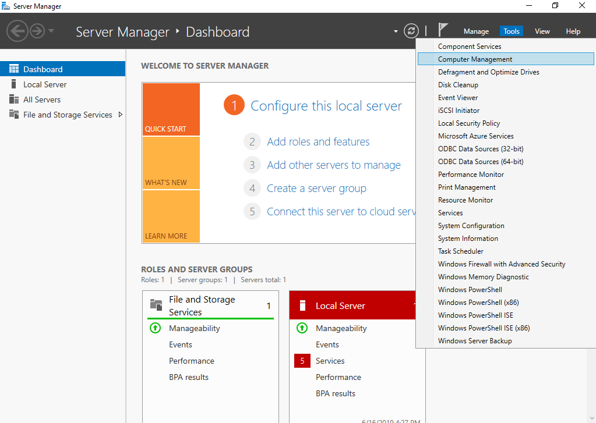
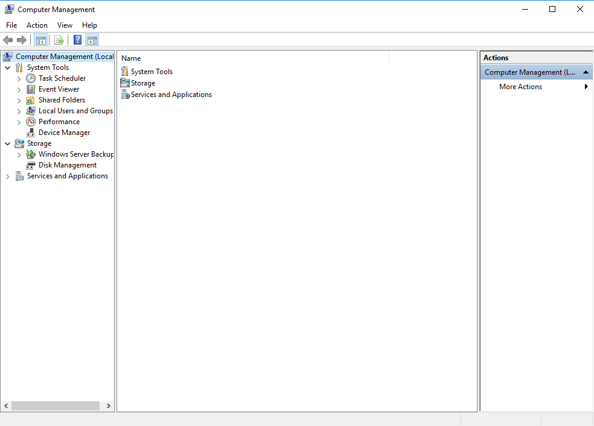
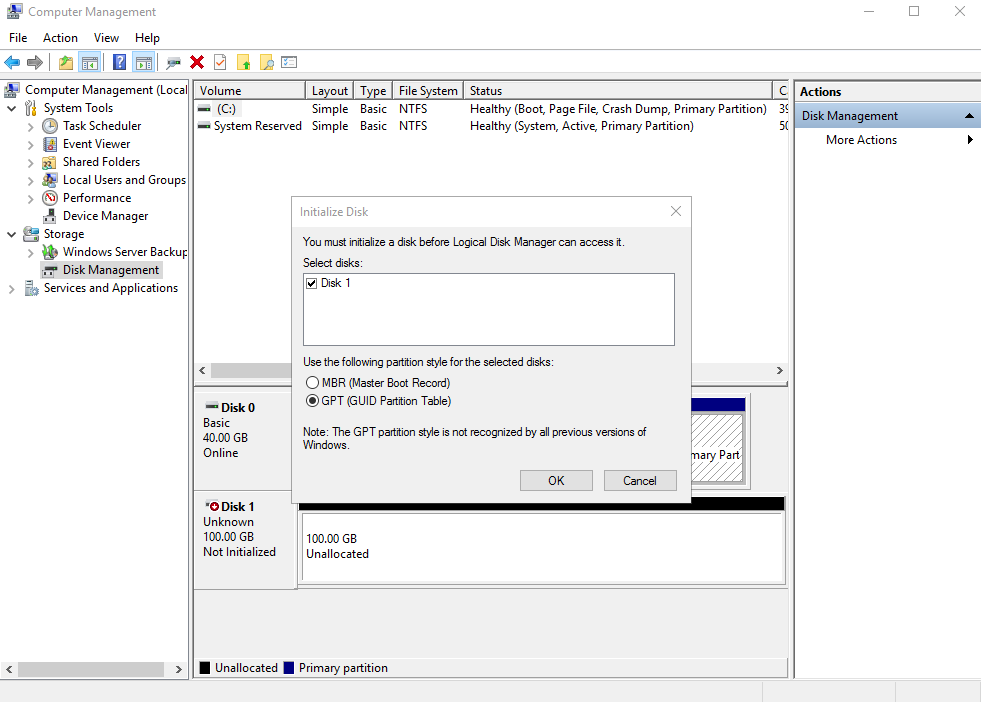
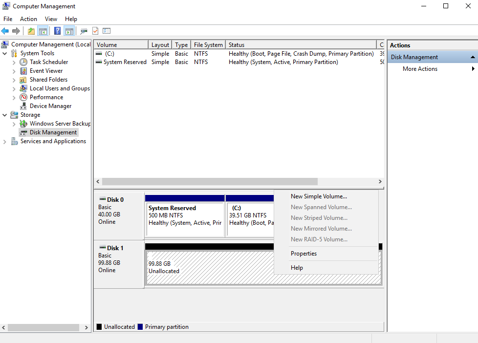
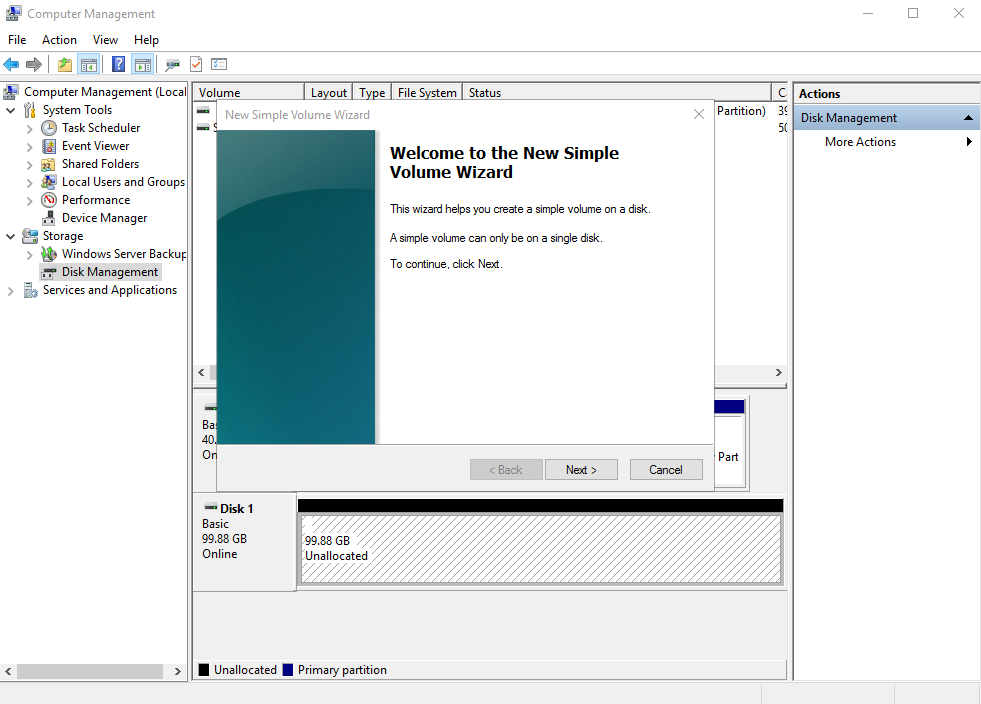
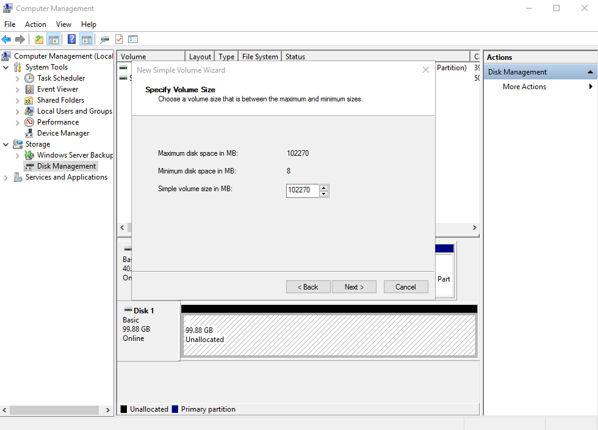
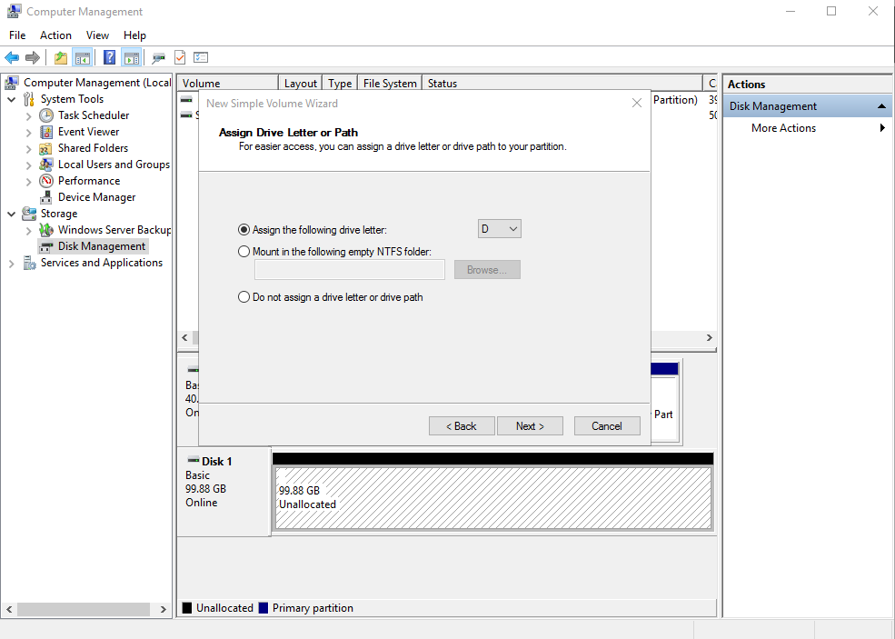
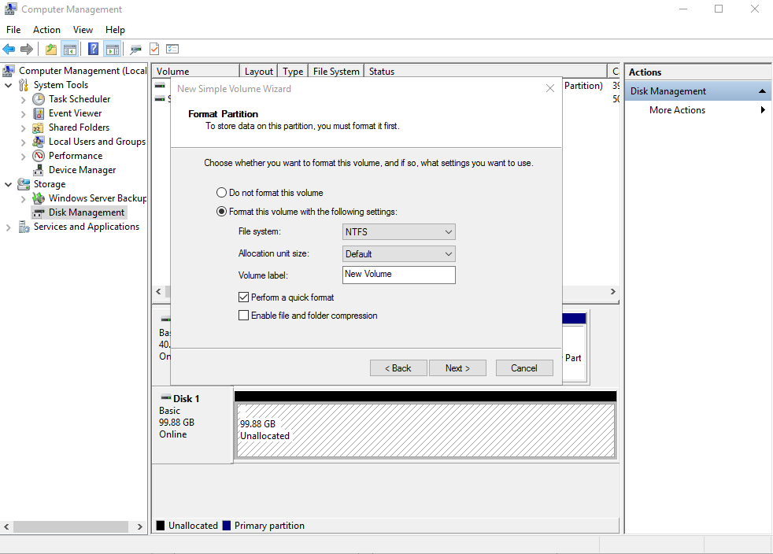
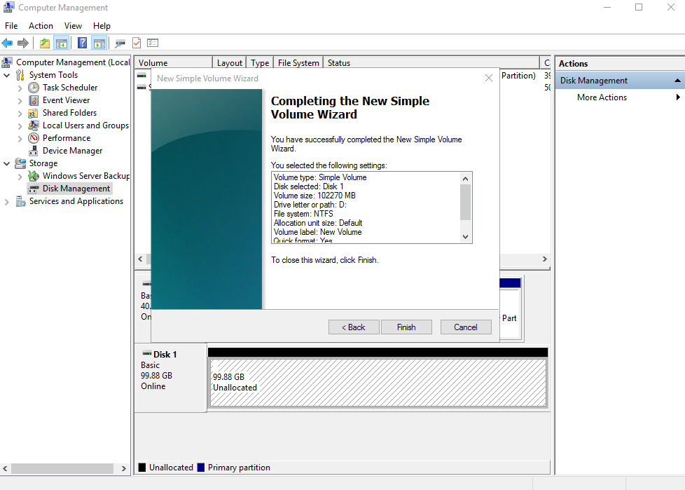
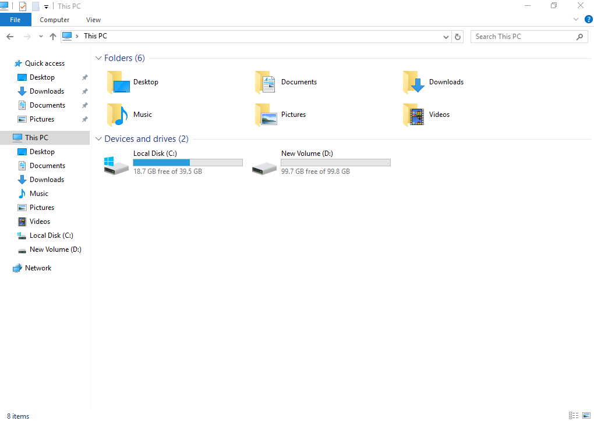

Scenarios
This section uses Windows Server 2016 Standard 64bit to describe how to initialize a data disk attached to a server running Windows.
The maximum disk capacity supported by MBR is 2 TB, and that supported by GPT is 18 EB. Therefore, use the GPT partition style if your disk capacity is larger than 2 TB. For details about disk partition styles, see Scenarios and Disk Partitions.
The method for initializing a disk varies depending on the OS running on the server. This document is used for reference only. For the detailed operations and differences, see the product documents of the corresponding OS.
Prerequisites
- A data disk has been attached to a server and has not been initialized.
- You have logged in to the server.
- For how to log in to an ECS, see the Elastic Cloud Server User Guide.
- For how to log in to a BMS, see the Bare Metal Server User Guide.
Procedure
- On the desktop of the server, click the start icon in the lower left corner.
The Windows Server window is displayed.
- Click Server Manager.
The Server Manager window is displayed.
Figure 1 Server Manager
 - In the upper right corner, choose Tools > Computer Management.
The Computer Management window is displayed.
Figure 2 Computer Management
 - Choose Storage > Disk Management.Disks are displayed in the right pane. If there is a disk that is not initialized, the system will prompt you with the Initialize Disk dialog box.Figure 3 Disk list
 - In the Initialize Disk dialog box, the to-be-initialized disk is selected. Select a disk partition style and click OK. In this example, GPT (GUID Partition Table) is selected.The Computer Management window is displayed.Figure 4 Computer Management (Windows Server 2016)

The maximum disk capacity supported by MBR is 2 TB, and that supported by GPT is 18 EB. Because a data disk currently supports up to 32 TB, use the GPT partition style if your disk capacity is larger than 2 TB.
If you change the disk partition style after the disk has been used, the data on the disk will be cleared. Therefore, select a proper disk partition style when initializing the disk.
- Right-click at the unallocated disk space and choose New Simple Volume from the shortcut menu.The New Simple Volume Wizard window is displayed.Figure 5 New Simple Volume Wizard (Windows Server 2016)
 - Follow the prompts and click Next.The Specify Volume Size page is displayed.Figure 6 Specify Volume Size (Windows Server 2016)
 - Specify the volume size and click Next. The system selects the maximum volume size by default. You can specify the volume size as required. In this example, the default setting is used.The Assign Drive Letter or Path page is displayed.Figure 7 Assign Driver Letter or Path (Windows Server 2016)
 - Assign a drive letter or path to your partition and click Next. The system assigns drive letter D by default. In this example, the default setting is used.
The Format Partition page is displayed.
Figure 8 Format Partition (Windows Server 2016)
 - Specify format settings and click Next. The system selects the NTFS file system by default. You can specify the file system type as required. In this example, the default setting is used.The Completing the New Simple Volume Wizard page is displayed.Figure 9 Completing the New Simple Volume Wizard (Windows Server 2016)
 The partition sizes supported by file systems vary. Therefore, you are advised to choose an appropriate file system based on your service requirements.
- Click Finish.Wait for the initialization to complete. When the volume status changes to Healthy, the initialization has finished successfully, as shown in Figure 10.
- After the volume is created, click on the task bar and check whether a new volume appears in This PC. In this example, New Volume (D:) is the new volume.If New Volume (D:) appears, the disk is successfully initialized and no further action is required.Figure 11 This PC (Windows Server 2016)
